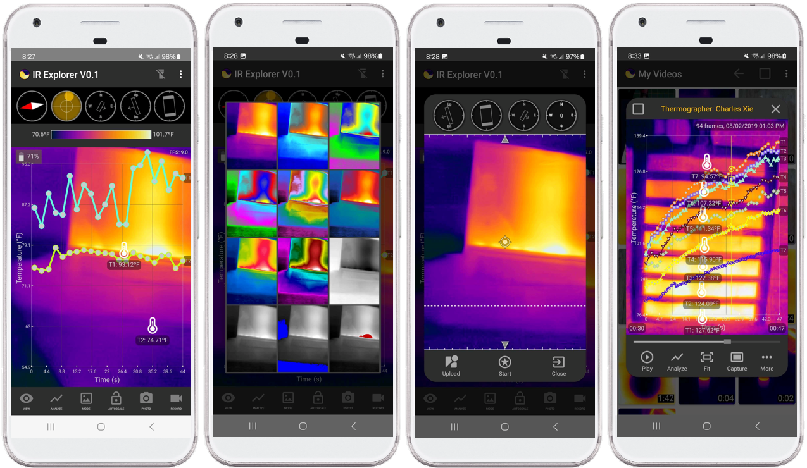
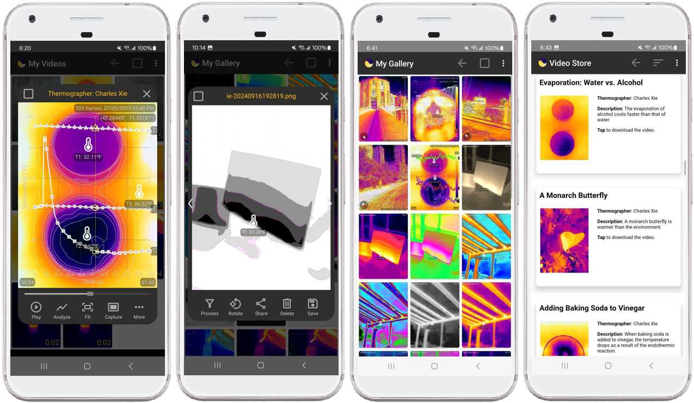
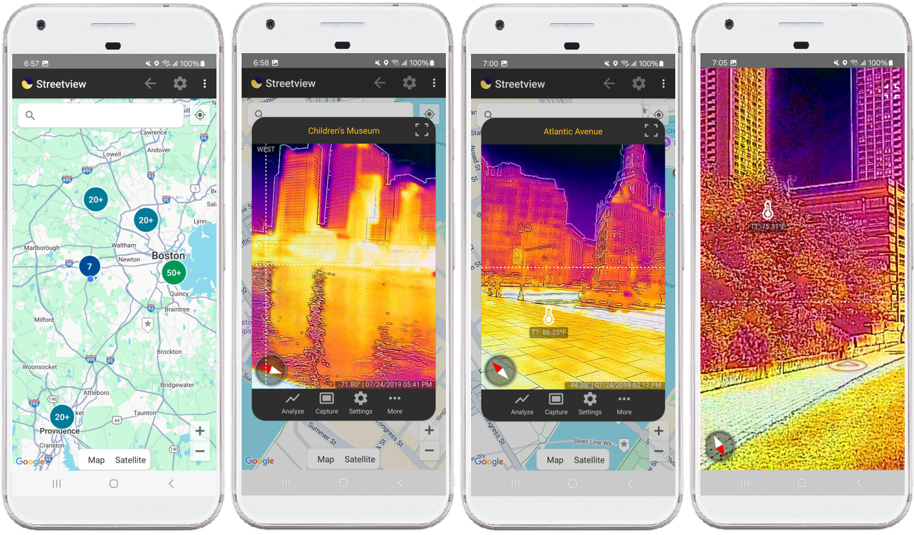
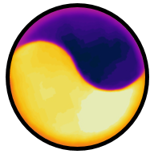

Infrared Explorer: Scientific Imaging for Science Experiments
Scientists have long relied on imaging to visualize invisible phenomena and thus advance science. The Infrared Explorer (IE) is an app that IFI is developing to realize the educational promise of scientific imaging — using thermal imaging enabled by the low-cost FLIR ONE infrared cameras as an example.

Seeing the unseen with the IE app
As a mobile app, the Infrared Explorer allows users to use FLIR ONE anywhere to capture thermal images, record videos, and share them through email or social networks. The IE app has its own galleries for storing images and videos, which also provide many functionalities for managing and post-processing images and videos. As a science app, the Infrared Explorer includes data analysis and visualization tools that support science and engineering practices. For instance, it has built-in temporal and spatial graphs for studying the time evolution and space distribution of temperature. It also features an online video store that has scores of recorded videos for users to download and analyze, allowing the IE app to be useful even for those who do not have a thermal camera.

Galleries, tools, and a video store in the IE app
Combined with Google Maps, the Infrared Explorer also provides a way for users to examine street views captured in thermal infrared light. The IE app comes with a tool for making this type of "street views" as well.

Street views in thermal infrared light rendered within the IE app

About the LogoThis is what a thermal camera sees when a piece of dry paper cut in a yin-yang shape is placed on top of an open cup of water that is slightly cooler than the ambient due to evaporation. For a scientific explanation, see this page.
Download previous versions for older devices Version 2.1 (Android Version 13)
Podcast
FLIR ONE Gen 3 for Android
FLIR ONE Pro for Android
FLIR ONE Edge
FLIR ONE Edge Pro
From sensing to imaging
Post-processing images
Development report
Thermal equilibration
Rubber band experiment
Thermal conductivity
Herschel's discovery
Opening and closing of tulips
Thermogenesis of moths
Paper on cup
Hydration of paper
Respiratory rate
Acid-base titration
Latent heat
Boiling point
Thermal gradient in saltwater
Terms of Service
Privacy Policy
Developers
Charles Xie
Xiaotong Ding
This project is supported by the National Science Foundation (NSF) under grant numbers #2054079 and #2329563. Any opinions, findings, and conclusions or recommendations expressed in this material, however, are those of the authors and do not necessarily reflect the views of NSF.